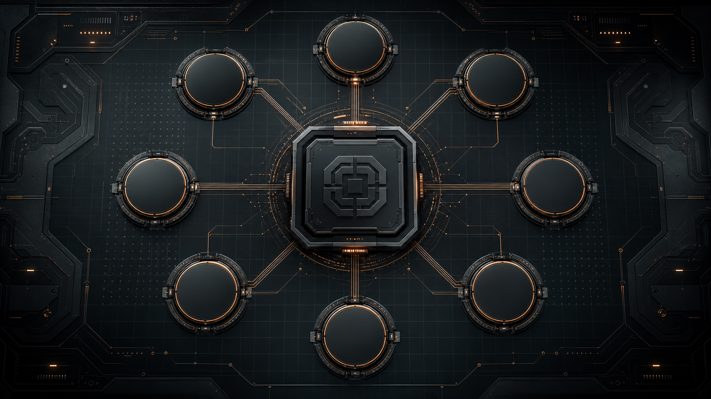

AI Цех
Автоматизация
Урок 6. Шесть способов, как превратить Codex и ChatGPT в рабочих агентов для повседневных задач: расписание, подключения, сценарии, фон, файлы и браузер.
Программирование ×
агент для повседневных задач
Сегодня Codex не «пишет сайт». Он становится рабочим агентом, который читает подключённые источники, собирает контекст, предлагает план и действует только после разрешения.
Шесть способов автоматизации.
Не одна каша, а шесть режимов работы
По расписанию
Агент сам возвращается к задаче в нужный день и время.
Подключения
Почта, Telegram, календарь, файлы, таблицы, CRM, документы.
Сценарии и skills
Собираешь свой процесс или берёшь готовую профильную методику.
Работа в фоне
Поставил задачу, ушёл дальше, забрал готовый результат.
Порядок в файлах
Разложить, переименовать, собрать выжимку, сделать таблицу.
Браузер
Открыть сайты, собрать данные, проверить изменения.
По расписанию:
агент сам возвращается к задаче
Scheduled Tasks
- Запланированные задачи внутри ChatGPT.
- Создаются обычной фразой в чате или через раздел задач.
- Подходят для сводок, напоминаний, регулярных проверок.
- Доступность зависит от тарифа и интерфейса.
Automations
- Повторяемые задачи внутри Codex.
- Могут использовать проект, файлы и подключённые инструменты.
- Подходят для рабочего мониторинга и задач по графику.
- Перед действием просим план и подтверждение.
Три задачи, которые можно поставить уже сегодня
Каждое утро в 9:00 присылай мне 3 главные новости по теме [моя ниша] и объясняй, что это значит для моего бизнеса.
Каждое утро в 8:30 собирай мой план дня: встречи, дедлайны, письма, где нужен ответ. Ничего не отправляй, только сводка.
Каждый понедельник проверяй 5 конкурентов: новые цены, акции, офферы, изменения на сайте. Дай таблицу и 3 вывода.
Подключения:
агент работает с твоими инструментами
Здесь Codex становится не просто чатом, а рабочим окном: он может читать подключённые источники, собирать контекст и готовить действия.
Кодекс — центр управления всем
Это не весь урок, а один из шести способов: подключить инструменты и управлять задачами из одного окна.

Как подключать Telegram, почту, календарь и CRM
Сначала карта доступов
Не угадываем, где кнопка. Просим Codex показать, какие инструменты есть в конкретном аккаунте.
Покажи, какие приложения, коннекторы, плагины и инструменты у меня сейчас доступны. Ничего не меняй, только покажи список и спроси, что подключать.
Потом конкретный инструмент
Если Telegram доступен — тестируем чтение. Если нет — Codex объясняет, какой app/plugin нужен.
Проверь, доступен ли у меня инструмент Telegram. Если доступен — найди диалог с [имя], покажи последние 5 сообщений и вложения. Ничего не отправляй.
Не знаешь, что подключать?
Пусть Codex вытащит задачи из тебя
Первый промпт показывает техническую карту доступов. Второй — помогает понять, какие реальные процессы и сервисы вокруг тебя стоит превратить в единое окно.
Codex сначала спрашивает
- чем ты занимаешься и какая у тебя роль;
- какие задачи повторяются каждый день/неделю;
- где переписки: Telegram, почта, мессенджеры;
- где файлы, таблицы, документы и презентации;
- где клиенты: CRM, Notion, Trello, Bitrix24;
- что нельзя делать без твоего подтверждения.
Потом выдаёт карту
- какие инструменты стоит подключить;
- какие 3 автоматизации дадут быстрый эффект;
- какой из 6 способов подходит к каждой задаче;
- какой первый безопасный тест сделать;
- где будет удобно работать из одного окна Codex.
Проведи со мной мозговой штурм по автоматизации моей работы. Сначала задай 8-10 вопросов про мои задачи, переписки, файлы, CRM/таблицы, документы, отчёты и ограничения. После моих ответов предложи карту подключений к Codex: какие инструменты подключить, какие 3 автоматизации дадут быстрый эффект, какой из 6 способов подходит и какой безопасный тест сделать первым. Ничего не подключай и не меняй без моего подтверждения.
Свои сценарии:
повторяемый процесс одной фразой
Где применять
- Коммерческое предложение по твоей структуре.
- Проверка презентации перед отправкой клиенту.
- Разбор таблицы продаж каждую неделю.
- Пост или письмо в фирменном стиле.
Сделай из моего повторяющегося процесса готовый сценарий. Процесс: [например, подготовка КП]. На входе: [что я даю]. На выходе: [что хочу получить]. Правила качества: [тон, структура, что нельзя]. Сначала задай вопросы, потом предложи сценарий, который я смогу вызывать одной фразой.
Не всё писать с нуля.
Можно взять готовую методику
Skill — это упакованный рабочий процесс: инструкции, проверки, ссылки и иногда скрипты. Plugin может принести с собой skills, apps и MCP-инструменты.
Продажи, маркетинг, стратегия:
подбираем профильный skill под задачу
Продажи
HubSpot: здоровье воронки, подготовка к встрече, чистка CRM.
Маркетинг
Twilio: промо-кампании, шаблоны сообщений, сегменты и согласия.
Исследования
Market research, Notion-доки, бренд-мониторинг, конкурентные выводы.
Контент
Canva, Google Slides, Figma Slides: презентации и визуальные материалы.
Подбери готовый skill или plugin под задачу: [что хочу автоматизировать]. Сначала покажи 3-5 вариантов: название, для чего подходит, какие доступы нужны, риск, первый безопасный тест. Ничего не устанавливай и не подключай без моего подтверждения.
Презентация + голосовые → сценарий правок
Живой пример с этого урока
У агента есть презентация, сценарий и голосовые рекомендации. Он не пересказывает, а превращает это в структуру правок.
Возьми презентацию [ссылка/файл], сценарий и мои голосовые рекомендации. Сделай рабочие правки: 1. Что оставить. 2. Что убрать. 3. Какие слайды переписать. 4. Какие кейсы добавить. 5. Какие копируемые промпты дать участникам. Сначала покажи план изменений. Файл не редактируй без подтверждения.
Работа в фоне:
задача идёт, пока ты занят другим
Исследование
Рынок, конкуренты, поставщики, документы, отзывы, публичные данные.
Разбор пачки
Много файлов, длинные переписки, несколько таблиц или сайтов.
Длинная задача
То, где агенту нужно время: собрать, сравнить, проверить, оформить.
Сделай эту задачу в фоне: [описание]. Сначала уточни, какие источники использовать. Потом собери результат в структуре: находки → выводы → риски → следующий шаг. Если для действия нужны мои разрешения, остановись и спроси.
Заявка → исследование → черновик КП
Не отвечать наугад
Клиент пишет: «Сколько стоит обучение?». Агент в фоне изучает компанию, сайт, масштаб, контекст и готовит черновик ответа.
В Telegram мне написал потенциальный клиент: [вставить сообщение]. Сделай подготовку в фоне: 1. Найди сайт и публичную информацию. 2. Оцени масштаб и возможную потребность. 3. Предложи 3 варианта ответа. 4. Подготовь черновик КП: проблема → решение → формат → цена/диапазон → следующий шаг. Ничего не отправляй клиенту.
Порядок в файлах:
агент наводит систему в материалах
Что можно сделать
- Разложить файлы по датам, клиентам, типам.
- Переименовать по единому шаблону.
- Собрать таблицу из договоров, актов, КП.
- Сделать выжимку из папки материалов.
Зайди в эту тестовую папку и предложи план наведения порядка. Нужно: разложить файлы по подпапкам, переименовать по шаблону ГГГГ-ММ-ДД_тема, собрать краткую сводку. Сначала покажи план. Оригиналы не трогай без подтверждения.
Папка документов → таблица решений
Из хаоса в управляемость
В папке лежат КП, заявки, договоры, акты и заметки. Агент собирает из них таблицу: клиент, статус, сумма, следующий шаг, риск.
Прочитай документы в этой папке и собери таблицу: клиент → тип документа → сумма/срок → текущий статус → следующий шаг → риск. Если данных не хватает, поставь «требует проверки». Ничего не переименовывай и не перемещай без подтверждения.
Браузер:
агент сам ходит по сайтам и собирает данные
Цены
Собрать тарифы, акции, условия, изменения на сайтах конкурентов.
Новости
Проверить отрасль, обновления, тендеры, публикации, вакансии.
Скриншоты
Снять страницы, сохранить доказательства, сравнить «было/стало».
Открой сайт [ссылка] и собери в таблицу: оффер, цены, акции, условия, сильные стороны, слабые места. Если сайт не открывается или данных нет, скажи честно. Ничего не выдумывай.
Мониторинг конкурентов → сигнал руководителю
Не «посмотри сайт», а система наблюдения
Агент регулярно проверяет сайты конкурентов, отмечает изменения и приносит короткий вывод: что изменилось и что делать.
Раз в неделю проверяй сайты конкурентов: [ссылка 1] [ссылка 2] [ссылка 3] Собирай: новые цены, акции, продукты, изменения в оффере. В конце дай 3 вывода и 1 рекомендацию для моего бизнеса.
Один протокол, который спасает от хаоса
Сначала чтение
Пусть агент покажет, что он видит: письма, файлы, строки, сообщения, сайты. Без изменений.
Потом план
Пусть объяснит, что собирается сделать и какие данные использует.
Только потом действие
Отправка, удаление, CRM, публикация и платежи — только после явного подтверждения.
Работай в безопасном режиме: сначала прочитай данные и покажи план. Ничего не отправляй, не удаляй, не редактируй, не публикуй и не оплачивай без моего отдельного явного подтверждения.
Выбери один способ и один реальный процесс
Что сделать
- Выбрать один из 6 способов автоматизации.
- Выбрать один рабочий процесс, не всю жизнь сразу.
- Спросить Codex, какие инструменты нужны и доступны.
- Проверить на одном безопасном примере.
Что прислать
- Номер способа: 1-6.
- Название процесса.
- Какие инструменты подключены или нужны.
- Скрин промпта и первый результат.
Помоги выбрать одну рабочую задачу для автоматизации. Сначала спроси меня про мои повторяющиеся процессы. Потом выбери 3 кандидата по формуле: много пользы, мало риска, легко проверить. После моего выбора предложи, какой из 6 способов автоматизации подходит лучше.
Сегодня — 6 способов автоматизации.
Дальше — автономные агенты
Сегодня
Codex и ChatGPT как инструменты для рабочих процессов: расписания, подключения, сценарии, фон, файлы, браузер.
Дальше
Личные агенты с памятью, сервером, постоянными ролями, отдельными помощниками и большей автономностью.